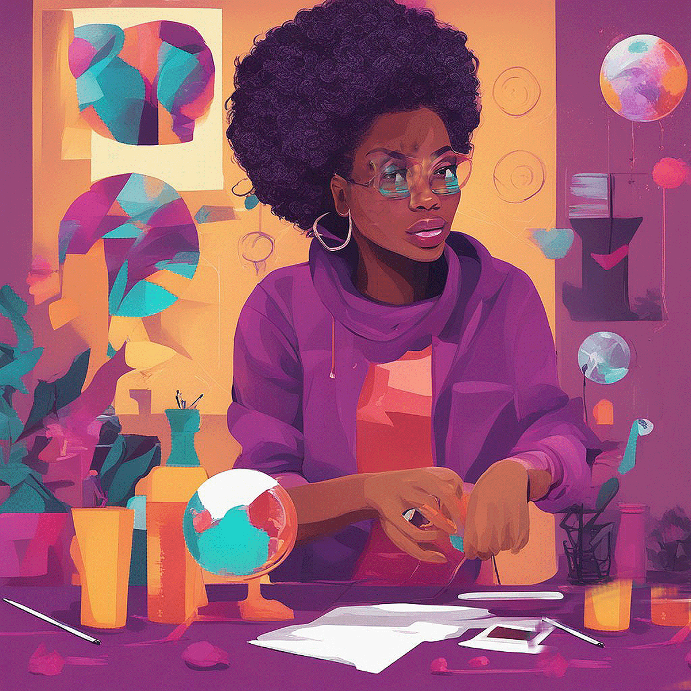
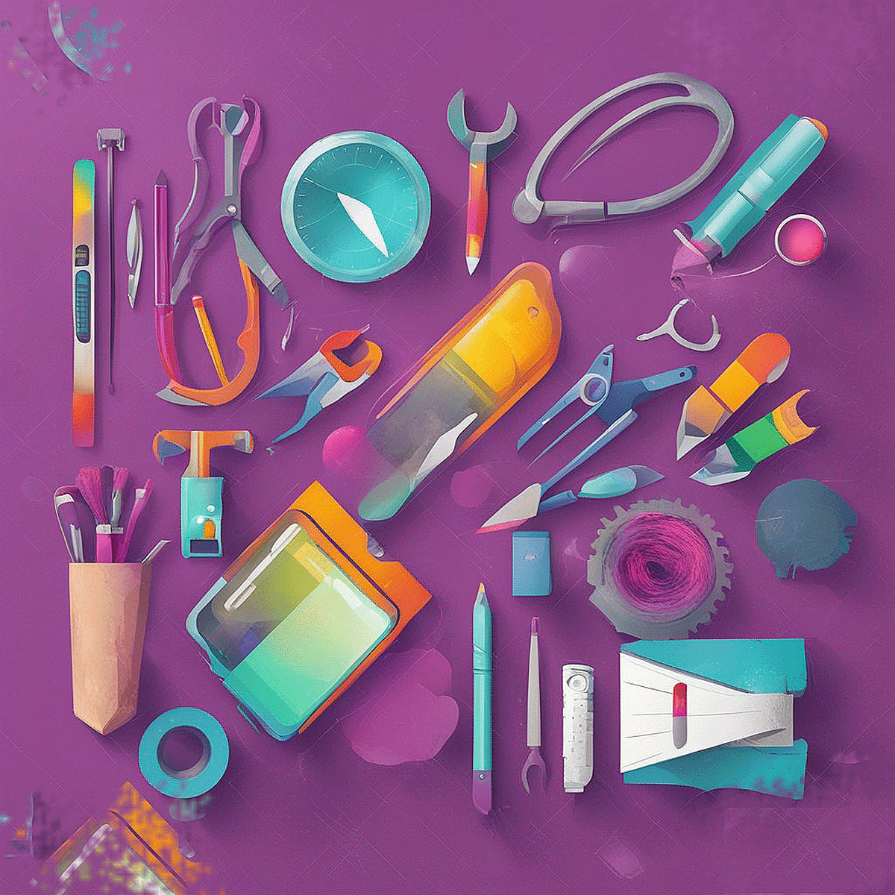
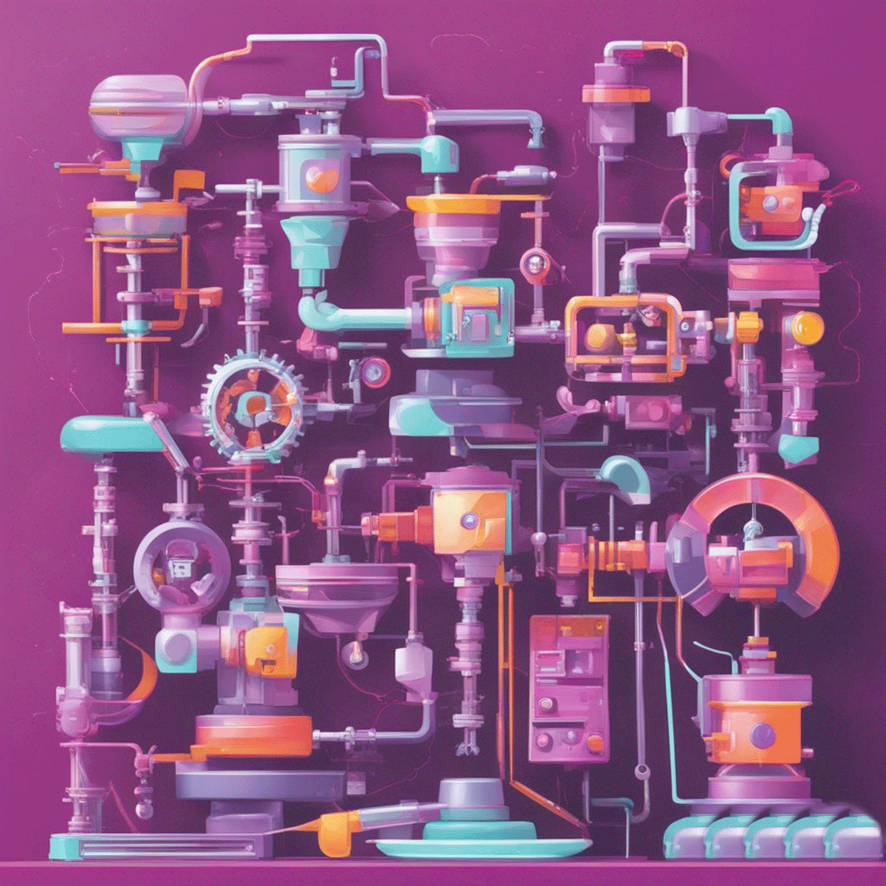
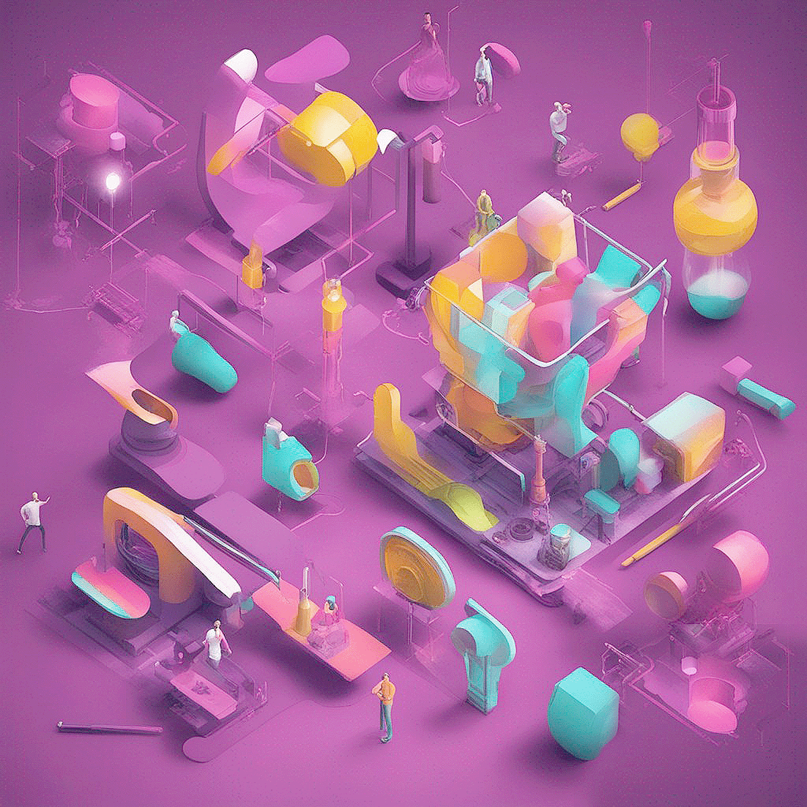
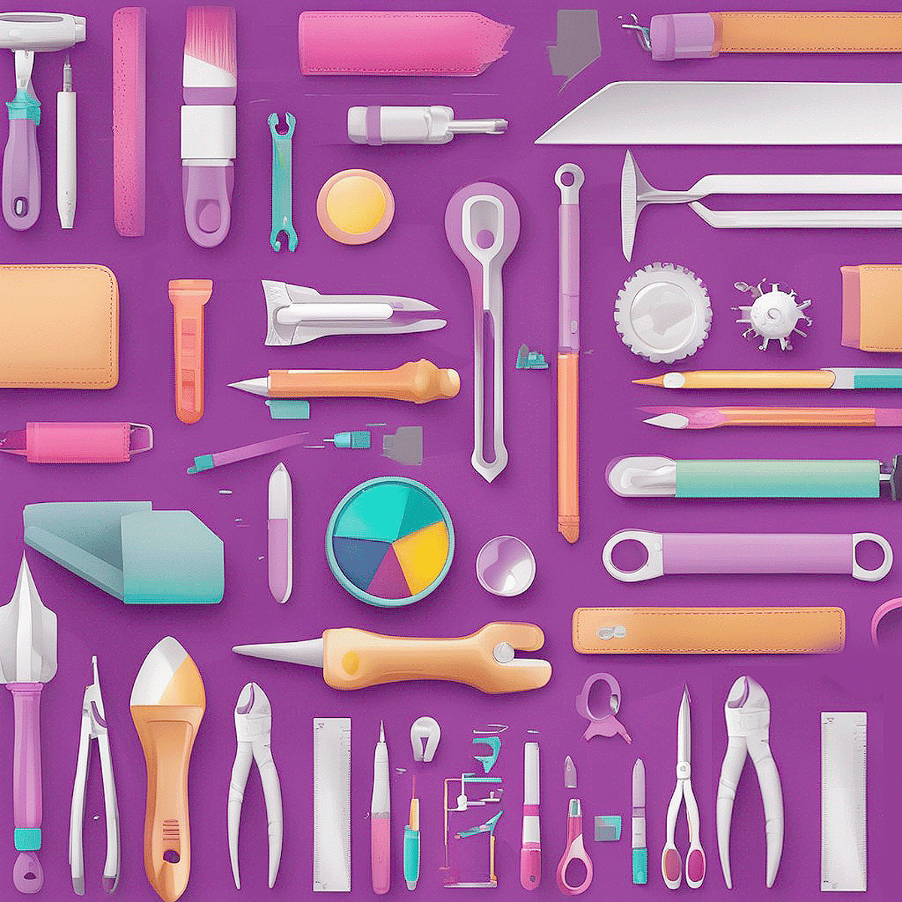
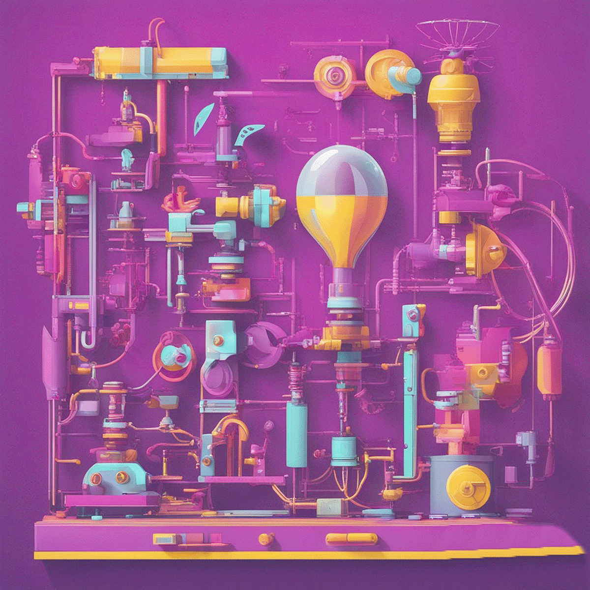

A Space to Create
Africa Youth population is on the rise among all
continents with a whooping 60% estimate of the total youth population.
At Mademax, our goals and objectives are clear and inline with this statistic:
we aim to bring unique products to life, create valuable
job opportunities for the youths in Africa, foster innovation,
and offer a dynamic space for creativity to flourish.

Overview:
As an OEM hybrid industrial park startup, Mademax embodies a mission to
inspire innovation and elevate value in everything we do.
Our core values of creativity, excellence,
and collaboration drive our endeavors.

Product Categories
We are dedicated to producing a diverse range of products,
spanning education toys, office/school/hospital equipment, home appliances,
handy tools, construction and auto accessories,
tanks, drip irrigation nozzles, and more item that
we import from China but can be made here in Africa.
Unique Selling Proposition (USP)
Mademax sets itself apart through our unwavering focus
on originality, quality, and innovation.
Our products are prototyped, designed and innovated to stand out in the market,
captivating new customers with their distinctiveness functionality
Business Model
Our business model thrives on flexibility. We wholeheartedly
believe that our members are the driving force behind our success.
Their creativity is celebrated and rewarded, encouraging continuous development.
We plan to introduce new products every week and proactively
address markert concerns.
Job Creation and Community
Creating job opportunities within our local community is central to Mademax's
vision by creating a flexible space for innovation.
By establishing roles in production, assembly, distribution, and support functions,
we contribute to the growth and prosperity of our community.

Technology and Innovation
Mademax embraces cutting-edge technologies such as arm programming, data science and analytics ,
3D printing, machine learning, IoT, and fabrication to achieve efficient mass
production and fuel our commitment to innovation.
Production Process
The journey from concept to creation involves careful steps:
product innovation and user data research for market product fit,
programming, prototyping, 3D printing or fabrication,
rigorous testing, and meticulous final
production. It's a process we take pride in.

Future Growth, Expansion & continuous learning:
Mademax's future is characterized by growth and expansion.
We're excited about expanding
our product lines, exploring new markets,
and seeking collaborations across industries.
We aim to teach out member to use innovation tool and methods such as AI, and data science
with the main goal of improving the living standards of the Africa Youth population.

Marketing and Branding:
At Mademax, our marketing strategy is a blend of online and offline efforts.
We harness the power of social media, partnerships,
and compelling campaigns to elevate our brand presence.
Mademax is more than a business venture; it's a dynamic space for creativity
and innovation to flourish. We're unwavering in our commitment to delivering
unique products, fostering job growth, and making a positive impact in the community.
Membership and Rewards
We've crafted a stipend system to recognize and reward
the creativity and innovation of our
active members. It's our way of fostering an
environment where every contribution matters.
